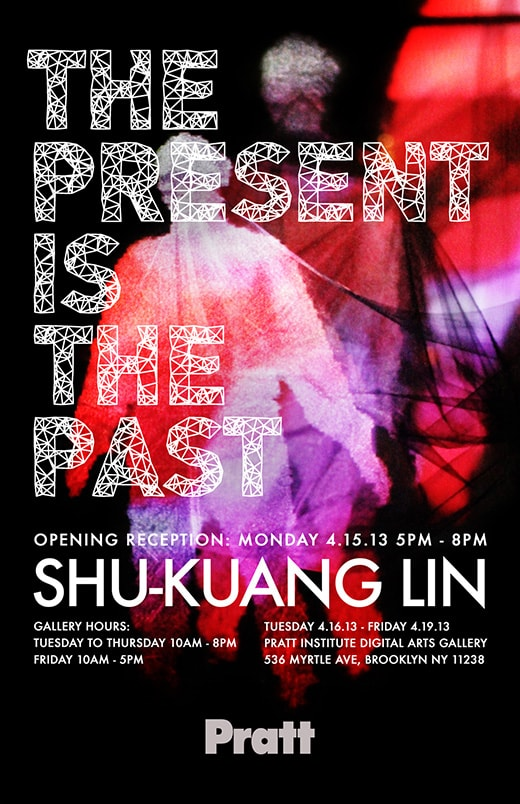
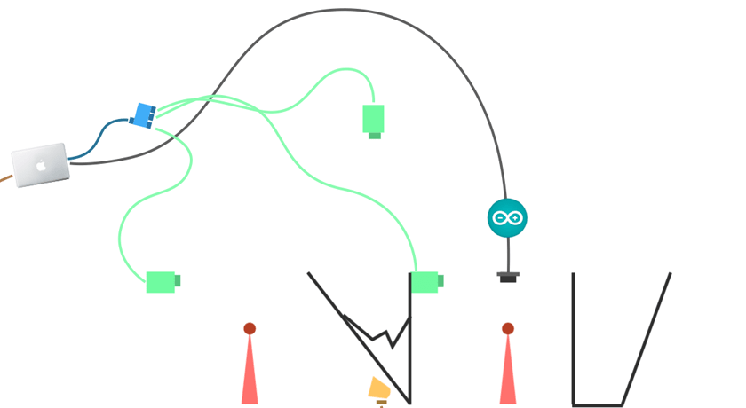

2013April
The Present is The Past
THE PRESENT IS THE PAST was inspired by the artist’s grandmother, who is suffering from dementia. In the installation, participants will visually experience a feeling of demented memory, which reflects the confused relationship between the Alzheimer’s patients and people around them. It forces participants to empathize with Alzheimer’s patients who are stuck in a timeline and trying to escape from chaos. Shu-Kuang attempts to bring an inside into Alzheimer’s disease and positively understand his grandma’s unusual world in an artistic light.

In recent years, my grandma is suffering from dementia. In her mind, sometimes she lives in a different year from ours, like 20 years ago. This situation encourages me to imagine a feeling of being stuck. The world we are facing is the reality, but how about for people who can’t tell the present time? Moreover, I think people around Alzheimer's patients influence them the most. In this project, I focus on a relationship between the patients and people. By my experience, I feel like my grandma won’t experience dementia until I visit her. She can recognize me well on the phone but not in person. The experience inspires me back to my interest about time and space. When both my grandma and I are in the same space, my existence brings about the chaos of her memory and confuse her. By that, I come up with an interactive relationship between Alzheimer’s patients and people around them as my grandma and I. People can use their present action to interrupt patients’ past image, and both the present and past images are combined simultaneously.
Issues of content
THE PRESENT IS THE PAST, depicts patients’ unusual world. In the installation, people will visually experience a feeling of dementia. It forces them to empathize with Alzheimer’s patients who are stuck in a timeline and try to escape from chaos.
The user-experience includes two parts: main player and participator. The former creates the present images, and the latter recalls the past memory.
Alzheimer's Patient = Main Player
Main player represents an Alzheimer’s patient. When he walks into the gallery and stands in front of the first screen, he will see his silhouette projected on both the first and second screen and filled with colorful motion images. Unless someone else walks through the installation, all the main player’s action is shown continuously. In my installation, it stands for the present time.
People Around Patient = Participator
At the same time, while someone else walks into the gallery and passes through the installation between the first and second screen, he is a participator representing people around the Alzheimer’s patient. The participator won’t see himself on the screens, but his existence influences the main player’s vision. The main player’s vision will become chaotic, because the images projected on the second screen are not showing the present action anymore but changing to an action which happened a few seconds ago. These two screens overlay each other and make the main player gradually confused.

Time River
Time River is the first part appeals people to explore their imagination through the installation. It represents flowing memory is keeping going as time goes by. That depicts a linear time sequence we normal people live in. For people who are out side the gallery, it is too quite to believe that it is just that. The motion pictures projected on the gauzes is composed by several triangles in different sizes, colors, and transparent. They are moving slowly as a little river taking away the past. It’s non-stop as present timeline. However, when people walk into the gallery, Time River starts being unstable and disappear gradually.
The Present
Time River is the first part appeals people to explore their imagination through the installation. It represents flowing memory is keeping going as time goes by. That depicts a linear time sequence we normal people live in. For people who are out side the gallery, it is too quite to believe that it is just that. The motion pictures projected on the gauzes is composed by several triangles in different sizes, colors, and transparent. They are moving slowly as a little river taking away the past. It’s non-stop as present timeline. However, when people walk into the gallery, Time River starts being unstable and disappear gradually.
The Past
Time River is the first part appeals people to explore their imagination through the installation. It represents flowing memory is keeping going as time goes by. That depicts a linear time sequence we normal people live in. For people who are out side the gallery, it is too quite to believe that it is just that. The motion pictures projected on the gauzes is composed by several triangles in different sizes, colors, and transparent. They are moving slowly as a little river taking away the past. It’s non-stop as present timeline. However, when people walk into the gallery, Time River starts being unstable and disappear gradually.
Audio Issues
Audio is the best assistant to enhance conceptual impression with visual effects. It gives more emotion to the presentation and a deeper feeling inside the artist’s statement. In my installation, I combine a recorded audio of my grandmother with different pitches of variable instruments to depict the situation from normal to chaotic. At first, there is no sound in this space. It's quiet and peaceful. The only attracted thing is the Time River. However, it becomes different while people come in and make any kind of sound, even a little noise. For the Alzheimer's patients, people around them is the direct factor to make them confused regarding where they are. This action will also reflect on their consciousness of sound.
When people speak or make any noise in the installation, a recorded audio will be played with the volume of the noise. If people speak loudly, the recorded audio plays loudly. If people stop speaking, the audio fades out gradually till the space is silent. This 30-second sound effect is about my grandmother's praying in Chinese. When she is praying, she always closes her eyes and repeats the same words. Moreover, the audio output is composed of the praying sound effect with different instrument sounds using by peoples’ speaking pitch. The different pitches play different instrument sounds, such as piano and violin. It’s a synergy, which contains with the human voice and digital instruments.
Softwares
In terms of the software, the project is created by Max and Arduino. I use Max to manage and connect all elements such as videos, sound effects, and sensors together to create, experiment, and play. Arduino is used for connecting a sonar sensor with Max. A Kinect sensor detects the main player’s action and displays it by fantastic silhouette, which is composed with a beautiful ink-effect video in Max. Then, the hung sonar sensor will send the data to Max when it recognizes participators underneath. In Max, that data will not only change the rate of the videos, but also make the real-time silhouette jumpy and unstable. Max plays well on controlling audio and visual things, especially in my project.
Installation
THE PRESENT IS THE PAST is an interactive installation designed in a dark, vacant, and quiet space. In the space, there are certainly two multi-layer screens and one single layer screen made by a mass of black translucent gauzes. They are stretched from the ceiling to the floor and separated from each other so that people can walk through the installation. The multi-layer screens are complex. The feature of translucent gauzes benefits the sculpture in a secret and attractive way.
